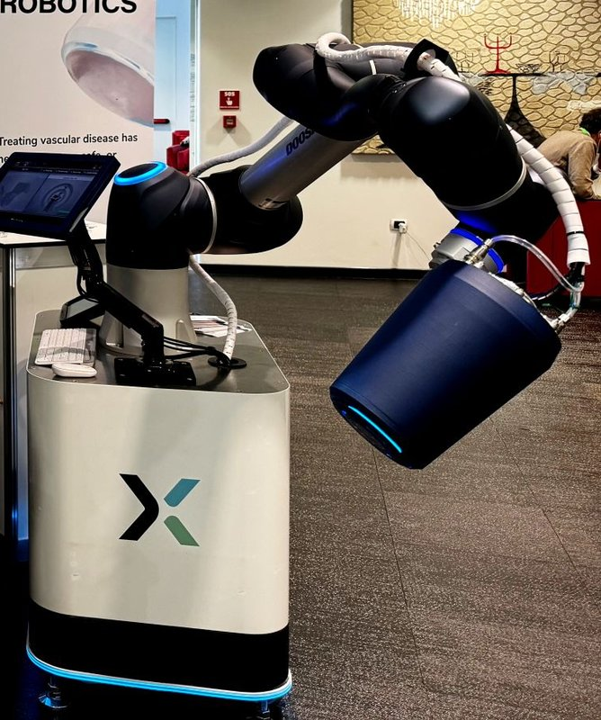

Commercial and clinical-stage systems · fluxone_fluxrobotics2023
Flux One
Flux One mobile magnetic navigation system

1 / 5


- Family
- Commercial and clinical-stage systems (magnetic-navigation)
- Devices
- magnetic J-tip guidewire: Terumo Radifocus 0.032-in (0.81 mm) with a 10 mm tip of five NdFeB magnets, 2 mm diameter, silicone coated (heunis2023_flux Sec. III-A)
- Degrees of freedom
- 7 (arm and coil) + surgeon push-pull 1, guidewire bent in two planes (heunis2023_flux Sec. IV-C)
- Push
- Magnetic
- Twist
- Field direction
- Tested up to
- Phantom
- Sim-to-real
- None found — No simulation-trained controller found for this robot.
Testing
- Highest level
- Phantom
- What was tested
- silicone abdominal phantom from patient CT, 4 targets: one vascular surgeon with conventional (case 1) and magnetic (case 2) guidewire, 11 novice operators with Flux One; all targets reached, no adverse events (heunis2023_flux Sec. III-B, IV-A, IV-C). Company reports preclinical animal trials and first tests in Miami (twente_fluxrobotics), no published result
- Key numbers
- coil field up to 60 mT (heunis2023_flux Sec. I, citing its ref. 18); guidewire navigation time -47%; target 4: 22.7 s vs 73 s (-69%); 11-37 s per target in case 2; mean SUS 80%; coil cooling 9.2 L/min keeps surface at 45 C; arm speed limit 0.02 m/s (heunis2023_flux Sec. III-IV)
Mechanism
- Push (translation)
- magnetic (tip steering); insertion by the surgeon's hand at the bedside (heunis2023_flux Sec. I, IV-C)
- Twist (rotation)
- coil pose (7-DoF arm) and coil current set field strength and direction (heunis2023_flux Sec. I-II)
- Device range
- tip deflection -135 to 135 deg planned (heunis2023_flux Sec. II-A)
- Target anatomy
- fenestrated EVAR: coeliac artery and branches, SMA, left renal and contralateral common iliac arteries of an abdominal phantom (heunis2023_flux Sec. III-B)
Sensing and interface
- Force sensing
- none on the guidewire; arm keeps a 4 N virtual interaction-force constraint (heunis2023_flux Sec. III-A)
- Leader and haptics
- Omega.6 haptic device for coil positioning with force feedback at a virtual safety barrier, plus SpaceMouse, push buttons and touchscreen (heunis2023_flux Sec. II-B, Fig. 4e)
- Imaging
- pre-operative cone-beam CT planning and live fluoroscopy in a hybrid OR (Siemens Artis Pheno); no CT artefacts per Siemens technician (heunis2023_flux Sec. III-B)
- Sterility
- N.R.
Size
- Footprint (mm)
- arm horizontal reach 830 (heunis2023_flux Sec. II-B)
- Mass (kg)
- 120 (whole mobile trolley, heunis2023_flux Sec. II-B)
Simulation
- Simulation model
- virtual clone of the system for trajectory planning (Policy Improvement with Path Integrals), no guidewire physics simulator (heunis2023_flux Sec. II-C)
- Sim-trained controller
- none found
Versions
- Lineage
- Flux One: KUKA LBR iiwa with a liquid-cooled electromagnetic coil on a mobile trolley (heunis2023_flux Sec. II-B, Fig. 4); later system on a Doosan arm in the company photo (twente_fluxrobotics, article names 'Flux 2, the latest version'); described as a prototype of ARMM (utwente2023_flux; see armm_heunis2020)
Sources
- The Flux One Magnetic Navigation System: A Preliminary Assessment for Stent Implantation · IEEE Robotics and Automation Letters, 2023 · doi:10.1109/lra.2023.3289108 [heunis2023_flux]
- Flux Robotics verandert operaties met hightech medische innovatie · no DOI on file [twente_fluxrobotics]
- Robots improve safety, efficiency and precision of vascular surgery · no DOI on file [utwente2023_flux]
- Endovascular robotics: technical advances and future directions · Minimally Invasive Therapy & Allied Technologies, 2025 · doi:10.1080/13645706.2025.2454237 [pescio2025_endovascular]
- Robotic Systems in Cardiovascular Interventions: Evolving Platforms and the Path Forward · Methodist DeBakey Cardiovascular Journal, 2025 · doi:10.14797/mdcvj.1652 [mandhumula2025_robotic]
Notes
- Notes
- Family: commercial (A4 scope) by the author's decision (round 8; pescio2025 lists it as commercial-stage). By the Sec. II-A family rule it is preclinical: no clearance, no registered study, no patient found. Same group as armm_heunis2020 (kept as a separate row). The main picture shows the later Doosan-arm system, not the KUKA of the 2023 paper; the paper's photos are in the gallery.
This record
- Read level
- full — full (heunis2023_flux); web (twente_fluxrobotics, utwente2023_flux)
- Picture
- https://cdn.twente.com/filer_public/49/a6/49a6c924-a590-47aa-bc1a-fe419149be09/fluxrobotics_home.jpeg (page https://twente.com/en/artikelen/5595/flux-robotics-verandert-operaties-met-hightech-medische-innovatie/) ↗ — licence: press image; grade B
- Picture changes
- 2048 px original; cropped to the trolley, arm and coil (people at left removed); no edit; none upscaled
- Found by
- commercial: Search of commercial and clinical-stage systems.
- Data
- JSON · YAML:
records/robots/fluxone_fluxrobotics2023.yaml - Correction
- Suggest a correction [repository not created yet]